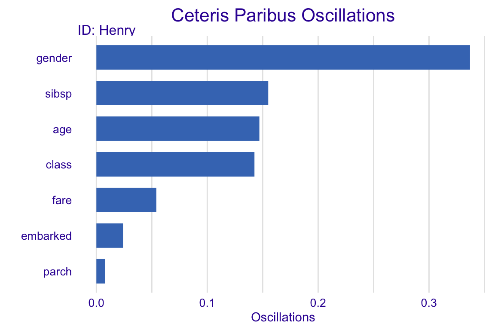
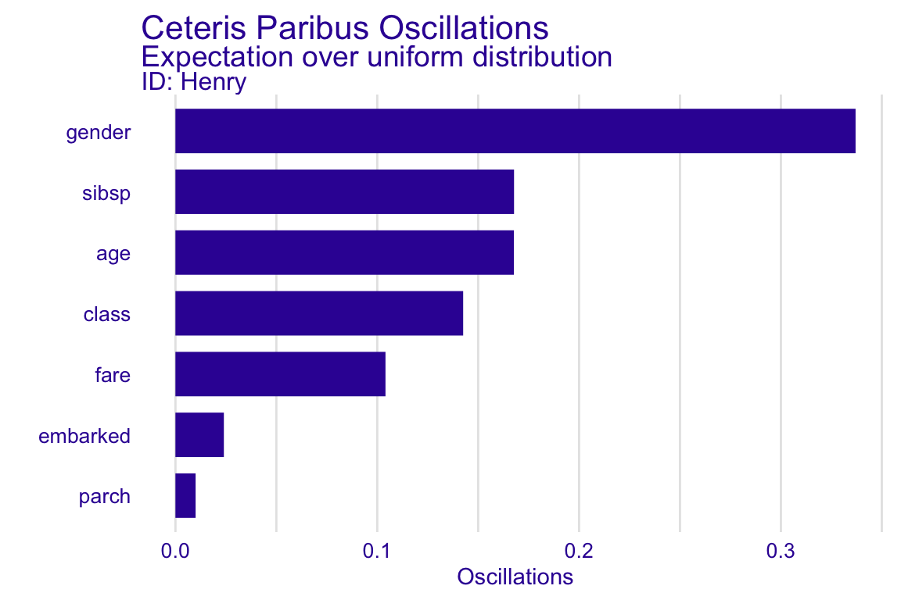
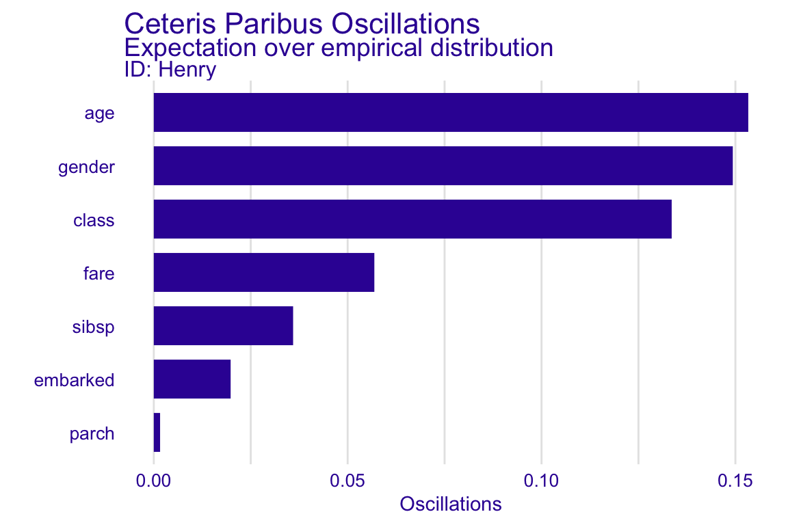

Chapter 7 Ceteris-paribus Oscillations and Local Variable-importance
7.1 Introduction
Visual examination of Ceteris-paribus (CP) profiles is insightful, but for a model with a large number of explanatory variables we may end up with a large number of plots which may be overwhelming. To prioritize between the profiles we need a measure that would summarize the impact of a selected variable on model’s predictions. In this chapter we describe a solution closely linked with CP profiles. An alternative is also discussed in the Chapters 11 and 13.
7.2 Intuition
To assign importance to CP profiles, we can use the concept of profile oscillations. In particular, the larger influence of an explanatory variable on prediction at a particular instance, the larger the fluctuations along the corresponding CP profile. For a variable that exercises little or no influence on model prediction, the profile will be flat or will barely change. Figure 7.1 illustrates the idea behind measuring oscillations. The figure corresponds to the CP profiles presented in Figure 6.4.
The larger the highlighted area, the more important is the variable.

Figure 7.1: (fig:CPVIPprofiles) The value of the colored area summarizes the CP oscillations and provides the mean of the absolute deviations between the CP profile and the instance prediction. Panel A shows continuous variables while panel B shows categorical variables. Example for the titanic_rf_v6 model.
7.3 Method
Let us formalize this concept now. Denote by \(g^j(z)\) the probability density function of the distribution of the \(j\)-th explanatory variable. The summary measure of the variable’s importance for model prediction at point \(x\), \(vip^{CP}_j(x)\), computed based on the variable’s CP profile, is defined as follows:
\[ vip^{CP}_j(x^*) = \int_{\mathcal R} |CP^{f,j,x^*}(z) - f(x^*)| g^j(z)dz=E_{X_j}[|CP^{f,j,x^*}(X_j) - f(x^*)|]. \] Thus, \(vip^{CP}_j(x^*)\) is the expected absolute deviation of the CP profile from the model prediction for \(x^*\) over the distribution of the \(j\)-th explanatory variable. A straightforward estimator of \(vip^{CP}_j(x^*)\) is
\[ \widehat{ vip^{CP}_j(x^*)} = \frac 1n \sum_{i=1}^n |CP^{f,j,x^*}(x^{*j}_i) - f(x^*)|, \] where index \(i\) goes through all observations in a dataset.
Note that the importance of an explanatory variable for instance prediction may be very different for different points \(x^*\). For example, consider model \[ f(x_1, x_2) = x_1 * x_2, \] where \(x_1\) and \(x_2\) take values in \([0,1]\). Consider prediction for an observation described by vector \(x^* = (0,1)\). In that case, the importance of \(X_1\) is larger than \(X_2\). This is because the CP profile for the first variable, given by the values of function \(f(z,1)=z\), will have oscillations, while the profile for the second variable will show no oscillation, because it is given by function \(f(0,z)=0\). Obviously, the situation is reversed for \(x^*=(1,0)\).
7.4 Example: Titanic data
Figure 7.2 provides a bbarplot of variable importance measures for different continuous explanatory variables for the logistic regression model (titanic_lmr_v6) for henry.
The longer the bar, the larger the CP-profile oscillations for a particular explanatory variable. Thus, Figure 7.2 indicates that the most important variable for prediction for the selected observation are gender and sibsp, followed by age.
If Henry were older, this would significantly lower the chances of survival. One the other hand, Henry were not travelling alone, this would increase these chances.

Figure 7.2: (fig:CPVIP1) Variable-importance measures calculated for Ceteris-paribus oscillations for henry based on the titanic_rf_v6 model
7.5 Pros and cons
Oscillations of CP profiels are easy to interpret and understand. By using the average of oscillations it is possible to select the most important variables for instance prediction. The methodology can easily be extended to two or more variables.
There are several issues related to the use of the CP oscillations. For instance, the oscillations may not be of help in situations when the use of CP profiles may itself be problematic (e.g., in the case of correlated explanatory variables or interactions - see Section 6.5). An important issue is that the local variable importances do not sum up to the instsance prediction for which they are calculated. In Chapters 11 and 13 we will introduce measures that address this problem.
7.6 Code snippets for R
In this section we present key features of the R package ingredients which is a part of DrWhy.AI universe and covers all methods presented in this chapter. More details and examples can be found at https://modeloriented.github.io/ingredients/.
In this section, we use a random forest classification model developed in the chapter 4.1, namely the titanic_rf_v6 model. It is trained to predict probability of survival from sinking of Titanic. Instance level explanations are calculated for a single observation henry - 47 years old passenger that travels 1st class.
DALEX explainers for both models and the Henry data are retrieved via archivist hooks as listed in Chapter 4.2.
library("randomForest")
explain_rf_v6 <- archivist::aread("pbiecek/models/9b971")
library("DALEX")
henry <- archivist::aread("pbiecek/models/a6538")
henry7.6.1 Basic usage for the calculate_oscillations function
To calculate CP oscillations, we have got to calculate CP profiles for the selected observation. Let us use henry as the instance prediction of interest.
CP profiles are calculated by applying the ceteris_paribus() function to the wrapper object. Resulting object can be then processed with calculate_oscillations().
The calculate_oscillations() function returns an object of class ceteris_paribus_oscillations, which has a form of a data frame, but has also an overloaded plot() function. We can use the latter function to plot the local variable-importance measures for the instance of interest.
## _vname_ _ids_ oscillations
## 2 gender 1 0.33700000
## 4 sibsp 1 0.15500000
## 3 age 1 0.14700000
## 1 class 1 0.14257143
## 6 fare 1 0.05407273
## 7 embarked 1 0.02400000
## 5 parch 1 0.00800000It can be then plotted with the generic plot().
oscillations_titanic_rf$`_ids_` <- "Henry"
plot(oscillations_titanic_rf) + ggtitle("Ceteris Paribus Oscillations")
7.6.2 Advanced usage for the calculate_oscillations function
Note, that the calculate_oscillations function calculates \(\widehat{ vip^{CP}_j(x^*)}\) as an average absolute difference between Ceteriws Paribus profile and the model prediction for a selected instance over selected grid of values.
The choice of grid of values may influence results as the expectation will be calculated over different distributions.
The default behavior is to use all unique values as grid points. But let us consider two alternative approaches.
One would be to calculate the expectation over uniform distribution for continuous variables.
To do this we manually specify a dense uniform grid of values for each variable.
Here we are doing it by setting the variable_splits argument.
cp_titanic_rf_uniform <- ceteris_paribus(explain_rf_v6, henry,
variable_splits = list(age = seq(0, 65, 0.1),
fare = seq(0, 200, 0.1),
sibsp = seq(0, 8, 0.1),
parch = seq(0, 8, 0.1),
gender = unique(titanic$gender),
embarked = unique(titanic$embarked),
class = unique(titanic$class)))Calculation of oscillations is easy.
oscillations_uniform <- calculate_oscillations(cp_titanic_rf_uniform)
oscillations_uniform$`_ids_` <- "Henry"
oscillations_uniform## _vname_ _ids_ oscillations
## 5 gender Henry 0.3370000
## 3 sibsp Henry 0.1677778
## 1 age Henry 0.1677235
## 7 class Henry 0.1425714
## 2 fare Henry 0.1040790
## 6 embarked Henry 0.0240000
## 4 parch Henry 0.0100000
Another approach would be to average over empirical distribution of each variable.
To do this we manually specify grid of values as a sample from validation data.
titanic <- na.omit(titanic)
cp_titanic_rf_empirical <- ceteris_paribus(explain_rf_v6, henry,
variable_splits = list(age = titanic$age,
fare = titanic$fare,
sibsp = titanic$sibsp,
parch = titanic$parch,
gender = titanic$gender,
embarked = titanic$embarked,
class = titanic$class))Having profiles we can then calculate oscillations with calculate_oscillations.
oscillations_empirical <- calculate_oscillations(cp_titanic_rf_empirical)
oscillations_empirical$`_ids_` <- "Henry"
oscillations_empirical## _vname_ _ids_ oscillations
## 1 age Henry 0.153323969
## 5 gender Henry 0.149336656
## 7 class Henry 0.133567739
## 2 fare Henry 0.056883552
## 3 sibsp Henry 0.035932034
## 6 embarked Henry 0.019818758
## 4 parch Henry 0.001623924